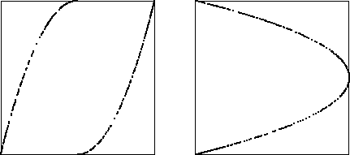

| 10. Recall the return map of the time series obtained by iterating a function consists of points lying on the graph of the function. Points on the left return map consist of points lying on the graph of parts of two parabolas, a perfectly fine function. The right does not consist of points lying on the graph of a function, because it is not single-valued: two values of xn+1 correspond to all xn except xn = 1. |
|  |
Return to Homework 8 Practice.